Les Miroirs d’Énigme à l’échelle
échelle approximative
Les 17 Miroirs à leur taille relative réelle, du plus petit au plus grand. Une main sert de repère.
-
Main · 19 cm
-

25BC0308
Ø 16 × 1,5 cm -

24CM0604
Ø 17 × 2 cm -
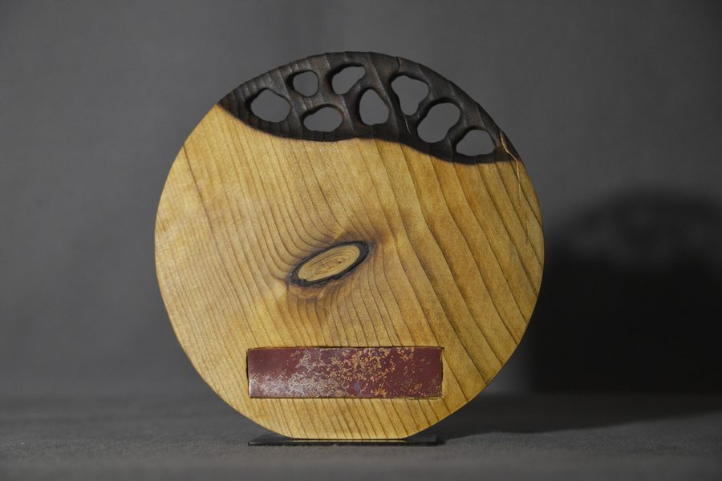
25CC0208
Ø 17 × 2 cm -
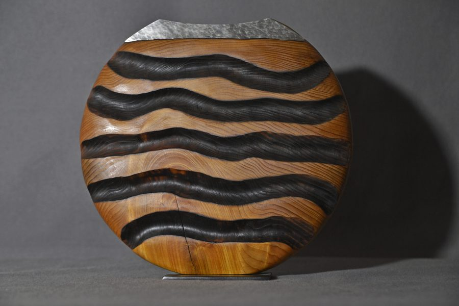
25CA0307
Ø 25 × 3 cm -

22FM0307
26 × 21 × 3 cm -
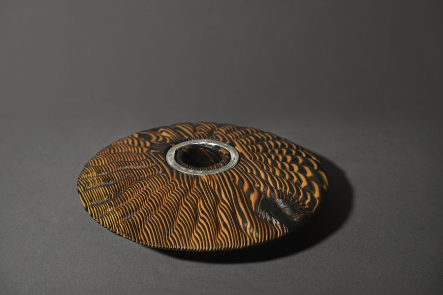
25DI0204
Ø 29 × 7 cm -
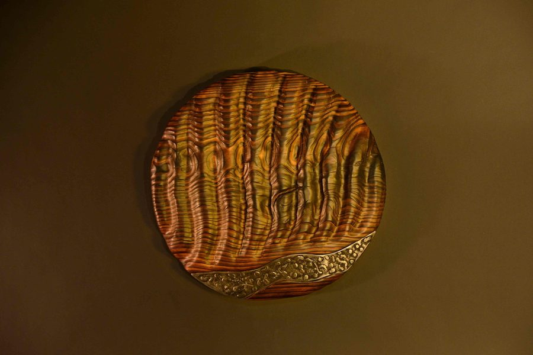
22TM0112
32 × 3 cm -
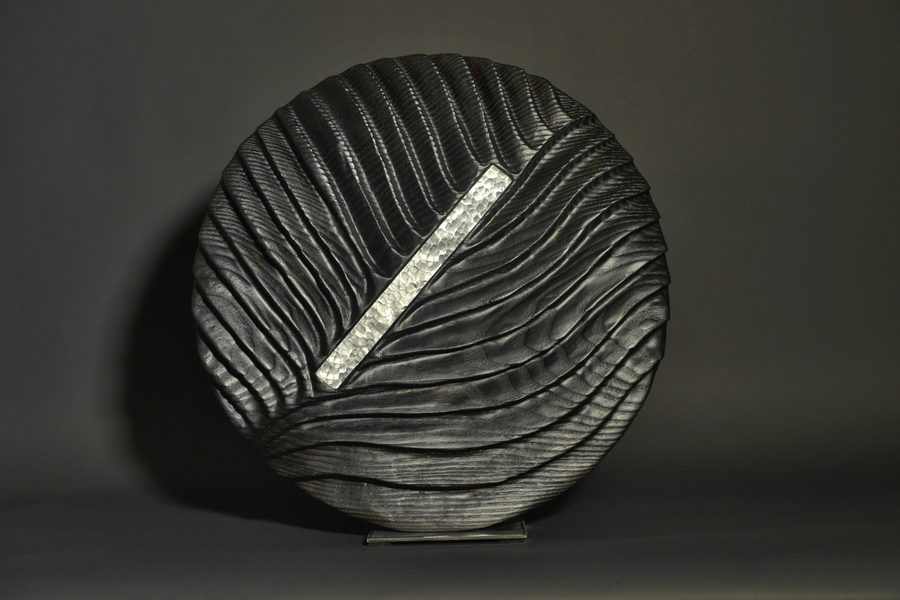
24FM0111
Ø 34 × 4 cm -
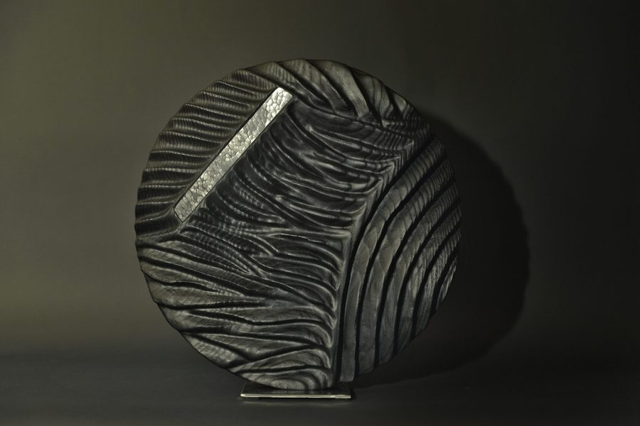
24FM0211
Ø 34 × 4 cm -
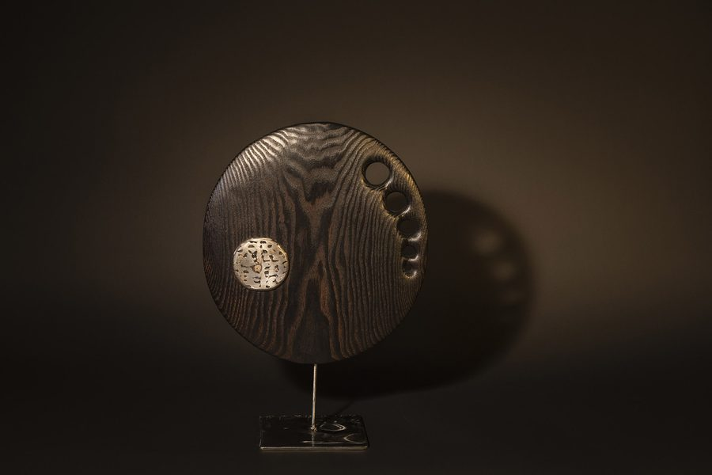
20SFM0112
37 × 26 × 3 cm -

24FM0311
Ø 40 × 4 cm -

25SA0108
Ø 40 × 4 cm -
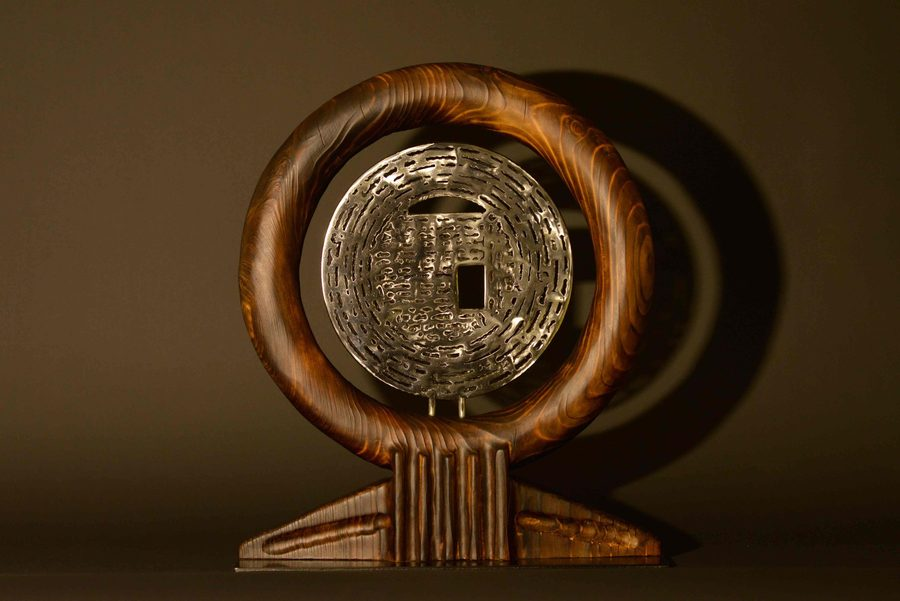
22CM0205
41 × 34 × 4,5 cm -

25DM0301
Ø 42 × 4 cm -
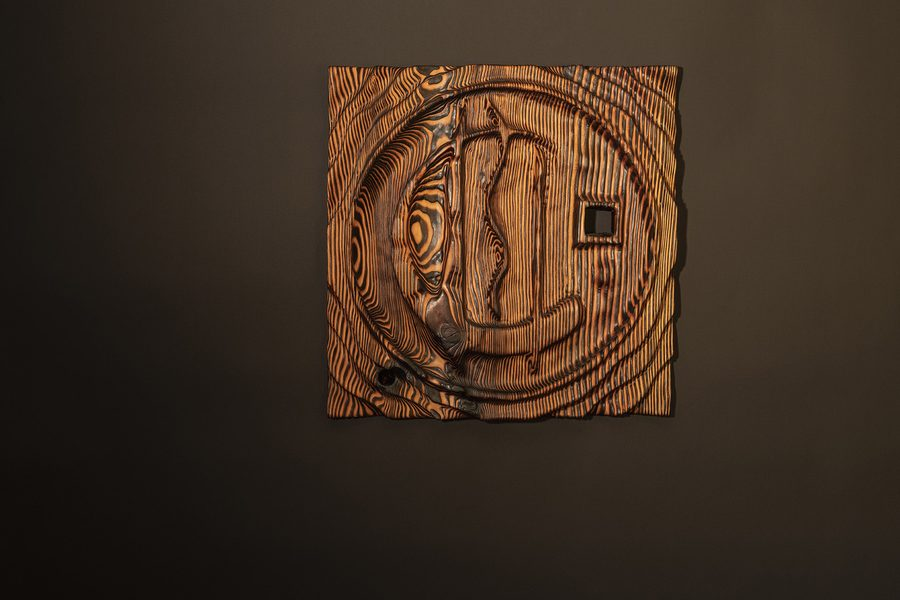
19MBD0111
43 × 5,5 cm -
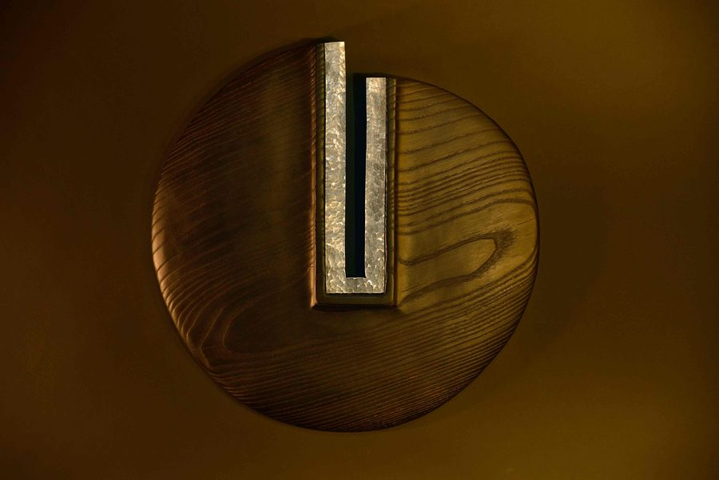
22FM0407
43 × 43 × 3 cm -
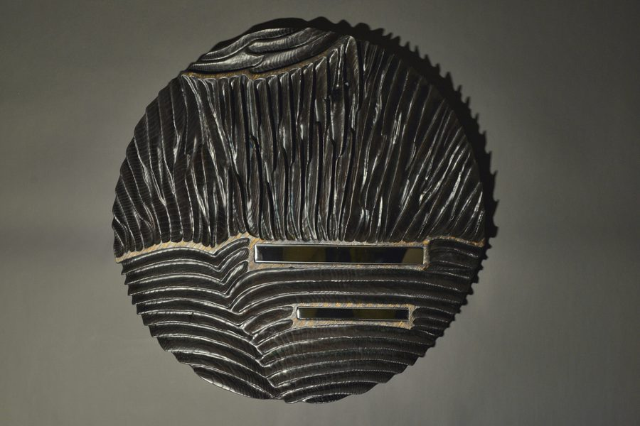
24FM0112
Ø 65 × 5 cm
Sur un mur
échelle approximative · silhouette de 1,75 m
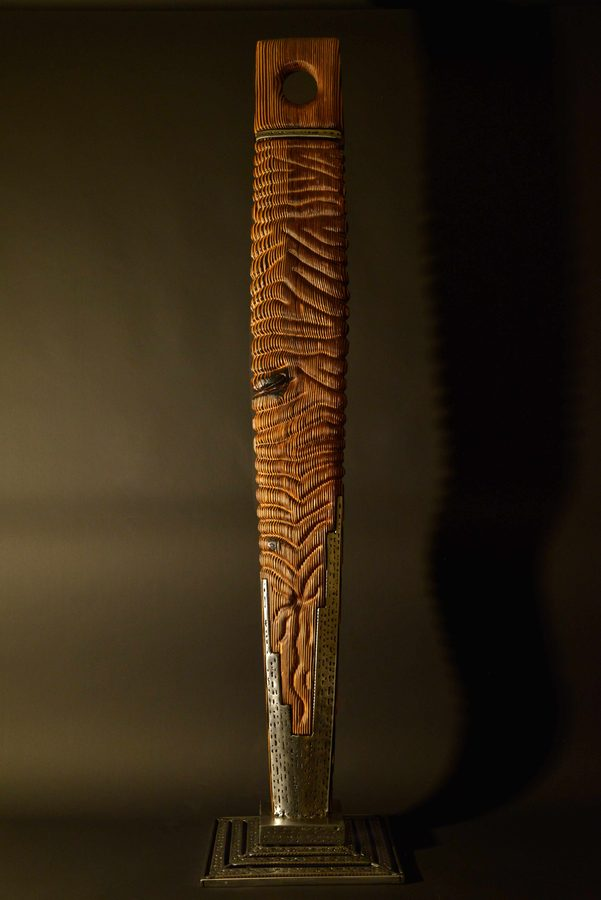
23DM0205
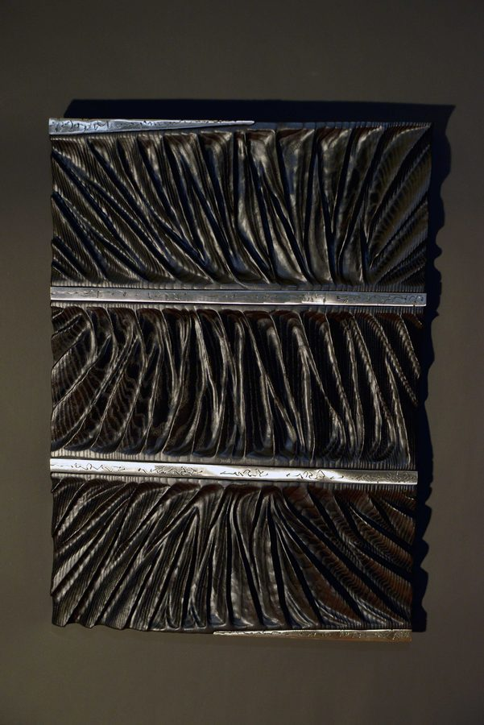
24FM0203
24FM0112
24CM0604
25SA0108
22TM0112
23DM0205·127 × 15 × 5,5 cm·Pin douglas, acier
24FM0203·65 × 47 × 4 cm·Frêne, acier
24FM0112·Ø 65 × 5 cm·Frêne, inox
24CM0604·Ø 17 × 2 cm·Cèdre, acier
25SA0108·Ø 40 × 4 cm·Séquoia, acier
22TM0112·32 × 3 cm·Tsuga, acier